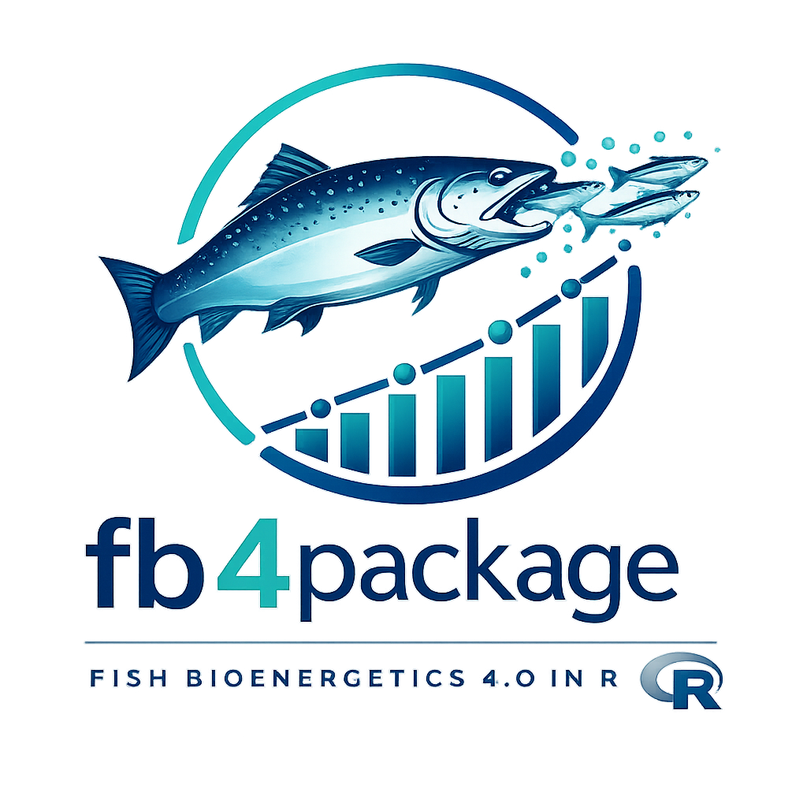

Predator Energy Density Functions for FB4 Model
Source:R/04-predator-energy-density.R
predator-energy-density.RdFunctions implementing three predator energy density models (PREDEDEQ 1–3) and the corresponding weight-solving routines used in the FB4 energy balance.
PREDEDEQ 1 — interpolated daily data: energy density supplied as a vector of length \(n_{\text{days}} + 1\) (one value per day boundary).
PREDEDEQ 2 — piecewise linear by weight: \(ED = \alpha_1 + \beta_1 W\) below the cutoff, \(ED = \alpha_2 + \beta_2 W\) above.
PREDEDEQ 3 — power function: \(ED = \alpha_1 \cdot W^{\beta_1}\).
Value
No return value; this page documents the predator energy density functions module. See individual function documentation for return values.
References
Hanson, P.C., Johnson, T.B., Schindler, D.E. and Kitchell, J.F. (1997). Fish Bioenergetics 3.0. University of Wisconsin Sea Grant Institute, Madison, WI.
Deslauriers, D., Chipps, S.R., Breck, J.E., Rice, J.A. and Madenjian, C.P. (2017). Fish Bioenergetics 4.0: An R-based modeling application. Fisheries, 42(11), 586–596. doi:10.1080/03632415.2017.1377558